注意事項
このページの範囲
- 成人の経尿道的な膀胱留置カテーテル
- 扱う場面
- 急性期医療での挿入
- 日常管理
- 抜去
- このページの対象外
- 小児
- 間欠導尿
- 膀胱瘻
- 持続膀胱洗浄
挿入を始める前
- 挿入前に報告する病歴・状態
- 尿道損傷が疑われる外傷
- 尿道手術後
- 狭窄歴
- 挿入困難歴
これらがあれば、挿入を始める前に報告する。
- アレルギーを確認する対象
- カテーテルの材質
- ラテックス
- 消毒薬
- 潤滑剤
- 挿入を止める変化
- 抵抗
- 強い疼痛
- 出血
これらがあれば無理に進めない。
- 膀胱内と確認できる前にバルーンを膨らませない
目的・主な適応

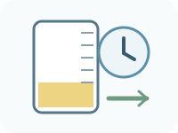

患者ごとに検討する代替手段
- 間欠導尿
- 体外式集尿器
- 排尿誘導
留置以外の方法を使えるか確認する。
観察項目
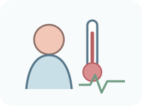
全身の変化
- 発熱
- 悪寒
- 意識変化
- 循環の変化
- 呼吸の変化
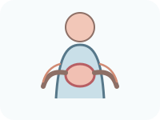
自覚症状の確認
- 下腹部痛
- 側腹部痛
- 灼熱感
- 尿意
- 膀胱けいれん
- 違和感
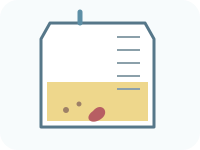
尿の観察
- 時間尿量
- 色
- 混濁
- 沈渣
- 血尿
- 血塊
- 急な増減
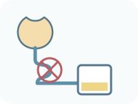
回路の確認
- 屈曲
- 圧迫
- たるみ
- 閉塞
- 尿漏れ
- 接続
- バッグの高さ
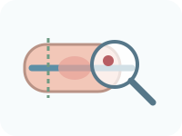
皮膚・挿入部の観察
- 発赤
- 腫脹
- 分泌物
- びらん
- 浸軟
- 圧迫
- 牽引
- 混濁や臭いだけでCAUTIと決めない。
- 感染の評価に合わせて見る変化
- 発熱
- 悪寒
- 下腹部痛
- 側腹部痛
- 循環の変化
- 意識の変化
これらを合わせ、尿検査・培養の必要性を判断する。
必要物品

- 適応に合う材質・長さ・最小限の太さを選ぶ。
- 表示されたバルーン容量を確認する。
- できればカテーテル接続済み。
- 採尿ポートと排液口を確認。
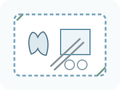
無菌操作の物品
- 滅菌手袋
- 滅菌ドレープ
- 滅菌綿球または滅菌ガーゼ
- 滅菌セッシ
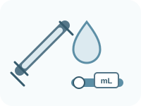
- 製品指定の種類・量を準備。
- 量を「男女」で決めない。
- 膀胱留置用カテーテル
- 閉鎖式採尿バッグ
- 滅菌手袋
- 滅菌ドレープ
- 滅菌綿球または滅菌ガーゼ
- 滅菌セッシ
- 尿道口清拭用の消毒薬または滅菌溶液
- 単回使用の滅菌潤滑剤
- バルーン用シリンジ
- 製品指定のバルーン膨張液
- カテーテル固定具
- 防水シート
- 非滅菌手袋
- エプロンなど必要なPPE
- 廃棄物袋
- 廃棄物容器
- 必要時、尿検体容器
- 製品・施設で異なる条件
- サイズ
- 材質
- 洗浄液
- 潤滑剤
- 膨張液
- バルーン容量
開封前に製品表示と院内手順を確認する。
- 開封前にラベル・電子添文を確認する。
挿入の手順
尿道口と周囲の部位
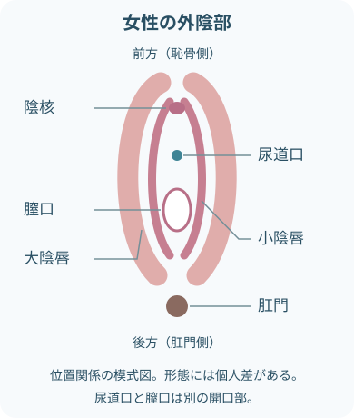
- 尿道口は膣口より前方にあり、別の開口部。
- 形態や見え方には個人差がある。
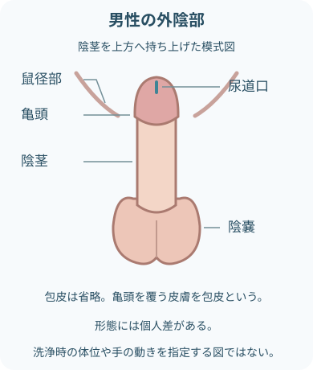
- 尿道口は亀頭の先端にある。
- 包皮は亀頭を覆う皮膚。図では省略している。
- 位置を見分ける図で、カテーテルの挿入角度や長さを指定しない。

- 尿道は膀胱から体外へつながる。
- 図は位置関係の理解用で、挿入角度や挿入長を決めるものではない。
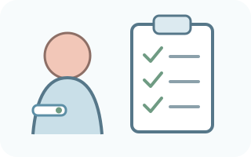
適応・本人・リスクを確認挿入前に照合- 指示
- 目的
- アレルギー
- 排尿歴
- 尿道損傷や挿入困難の可能性
説明して同意を得る。
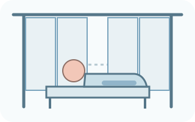
プライバシーと体位を整える- 必要部位だけ露出する。
- 防水シートを敷き、手指衛生と必要なPPEを行う。
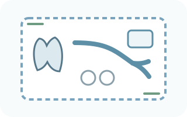
無菌野を作る- 物品を無菌的に開き、滅菌手袋とドレープを使用する。
- 閉鎖式回路を保つ準備をする。
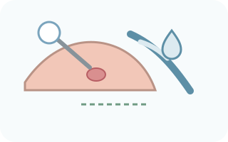
尿道口を清拭し、十分に潤滑- 清拭方向と使用液は院内手順に従う。
- 清潔にした先端とカテーテルを汚染しない。
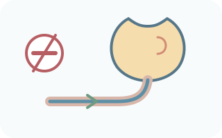
カテーテルをやさしく進める尿道の走行に沿って挿入する。
挿入を止める変化- 抵抗
- 強い痛み
- 出血
これらがあれば止め、無理に押し込まない。
 膀胱内を確認してバルーンを膨張
膀胱内を確認してバルーンを膨張- 尿流出後も必要な深さまで進める。
- 膀胱内と確認後、表示どおりの液・量をゆっくり注入する。
 固定し、尿が流れる位置へ
固定し、尿が流れる位置へ- 男性は包皮を元に戻す。
- 牽引なく固定する。
- 回路を屈曲させない。
- バッグを膀胱より低く、床から離す。
- 実施内容を記録。
留置中の管理
閉鎖式回路を保つ
カテーテルとバッグを不用意に外さない。
閉鎖式回路が破綻する状況
- 接続外れ
- 漏れ
- 無菌操作の破綻
- これらがあれば、院内手順に沿ってカテーテルと採尿バッグを無菌的に交換する。

重力で流れる道を作る
膀胱 → チューブ → バッグを下り勾配に。
尿の流れを妨げる条件
- 屈曲
- 体や柵による圧迫
- 低い位置のたるみ
これらを直す。
バッグは膀胱より低く、床に置かない。
バッグを定期的に空にする
患者ごとの清潔な容器へ排液。
- 排液口を容器や床へ触れさせず、飛散を避ける。
- 量と性状を観察・記録する。
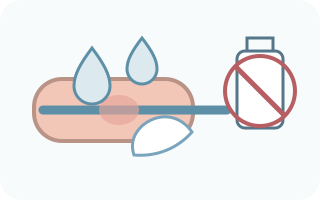
日常の清潔と固定
入浴・清拭時の通常の衛生ケアが基本。
- CAUTI予防だけを目的に、留置中の尿道口へ消毒薬を反復使用しない。
- 固定部と皮膚も観察する。

尿検体は採尿ポートから
少量の新鮮尿は、消毒したポートから無菌的に採取。
- 尿培養をバッグ内の貯留尿から採らない。
- 製品と検査部門の手順を確認する。
抜去の手順
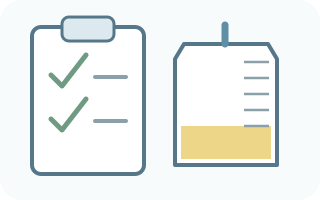
抜去の指示・条件を確認抜去前の確認- 留置継続の必要性
- 抜去時刻
- 再留置時の対応
説明し、バッグ内尿量を記録する。
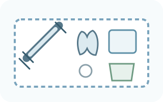
物品と体位を整える抜去に使う物品- 記録されたバルーン量に合うシリンジ
- 防水シート
- 手袋
- 清拭物品
- 廃棄物袋
 バルーンを完全に収縮
バルーンを完全に収縮- 製品の方法で膨張液を戻し、量を確認する。
- 戻らない場合は引かず、無理な吸引や切断をしない。
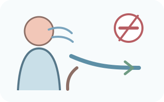
呼気に合わせてやさしく抜く力を抜いてもらい、ゆっくり抜去する。
抜去を止めて報告する変化- 抵抗
- 強い痛み
- 出血
これらがあれば止めて報告する。
- 抜去後を観察・記録
- 抜去後の確認
- カテーテルの破損
- カテーテルの欠損
- バルーンの破損
- バルーンの欠損
- 尿道口
- 排尿時刻
- 排尿量
- 排尿時の症状
- 尿閉が疑われれば膀胱容量を評価。
- 通常、抜去前のクランプは必要ない。
- 抜去後に院内手順で確認すること
- 観察時間
- 膀胱スキャン
- 再導尿基準
院内手順を優先する。
関連知識
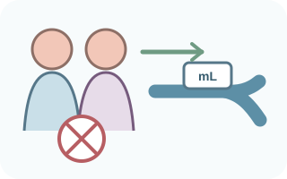
バルーン量は性別で決めない
バルーン量の基準となる表示
- カテーテル本体
- ファネル
- ラベル
- 電子添文
- 10mLの製品もあるが、すべてに共通しない。
- 膨張液の種類も製品指定を確認する。
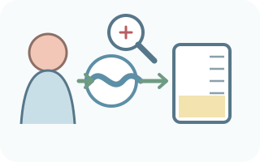
尿が出ないとき
患者 → チューブ → バッグの順に確認。
- 尿が出ないときの評価
- 循環
- 水分出納
- 膀胱部症状
- 屈曲
- 圧迫
- たるみ
- バッグの高さ
- 血塊
- 沈渣
- 位置異常
- 自己判断で洗浄しない。
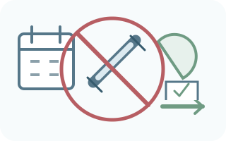
「定期的に行う」とは限らない
原則としてルーチンにしない処置
- 固定日数での交換
- 予防的な膀胱洗浄
- CAUTI予防を目的とした抗菌薬投与
個別の適応と指示を確認する。
交換などを判断する臨床的理由
- 閉塞
- 感染
- 回路破綻
製品の使用期間と合わせて判断する。

主な合併症
主な合併症
- CAUTI
- 尿道損傷
- 血尿
- 閉塞
- 尿漏れ
- 膀胱けいれん
長期留置で注意する問題
- びらん
- 圧迫損傷
- 結石
- 付着物
- 活動制限
- 自己抜去
出典
- NCI SEER Training「External Genitalia」— 女性の外陰部
- NCI SEER Training「Penis」— 陰茎・亀頭・包皮
- NCI SEER Training「Urethra」— 尿道口の位置
- NIDDK「The Urinary Tract & How It Works」
- 日本泌尿器科学会「尿路管理を含む泌尿器科領域における感染制御ガイドライン 改訂第2版」
- CDC「Summary of Recommendations: Guideline for Prevention of CAUTI」
- EAUN「Indwelling catheterisation in adults – Urethral and suprapubic」2024
- PMDA 医療機器電子添文「ノルタバルーンカテーテル」2023年3月改訂